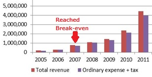

Japan’s social enterprise Florence 3: How it scaled its social impacts
photo provided by Florence
A Japanese version of this blog is available below. 日本語版は下記にあります
In my previous posts, I described the general characteristics of Florence, a model social enterprise in Japan. In this article I will analyze its way of scaling its impact.
What is “Scale”? What can a social enterprise do to further expand its impact in solving social problems? In the case of Florence, its social impact may be referred to as “creating more situations in which working mothers do not have to resign from their workplaces as they can rely on Florence’s sick-child care services.” However, while its problem-solving expands into certain geographic areas, there may still remain a multitude of people in other regions who are having the same difficulties. It is therefore necessary to come up with ways of scaling. In this case, scaling here is indeed different from how it would be for a normal commercial business, whose objective is to maximize financial returns, whereas the social enterprise’s mission is to scale social impact rather than financial returns.
The name of the game is how to increase collaborators, not competitors, who are involved in resolving social problems, and how to involve stakeholders in solving these problems by giving them concrete roles.
Paths to sale: Florence passed its break-even point in 2007, as early as in its third year of operation, succeeding in generating commercial profits without relying on subsidies or donations. This point can’t be over-emphasized. A vast majority of social enterprises find it extremely difficult to break even without relying on donations or subsidies.
(1) Strengthening of services (employing affiliated doctors): Under its sick-child care services, Florence decided to employ pediatricians on Florence’s staff, making it possible for the staff not only to take the sick children to their primary care doctors, but also for the staff doctors to visit and directly see the children. This strengthened the differentiation strategy over competitors in the same industry, putting Florence in a dominantly leading position.
Since Florence is not a for-profit corporation, its earnings are not being redistributed to shareholders; the profits are to be re-invested in resolving further social problems. Earning profits from its own business without depending on other sponsors enhanced Florence’s ability to negotiate with a variety of stakeholders by saying “We can provide services as we do now if you are willing to finance,” instead of saying “We need money.” Florence was able to achieve cooperation from stakeholders on an equal or even superior footing so that its services would be delivered to vulnerable populations.
(2) Involving firms’/individuals’ donations: It is precisely single parents who need sick-child care services; however, they are financially constrained. Florence, then, solicited donations from corporations and individuals, and succeeded in providing services to single parents with free memberships, $10 monthly fees, and $10-per-hour service fees; if had not been for donations from individuals or corporations, even single parents would have had to pay regular fees: $200 membership, $68 monthly, and $20-per-hour.
(3) Involving municipal government: Florence has called for support from local municipalities for those mothers who need sick-child care services. As a result of Florence’s advocacy, in five wards of the Tokyo Metropolitan area, each municipality office decided to provide partial subsidies for the services rendered. With the subsidies from the municipal governments, more and more working mothers became able to receive such services at lower costs.
Take a look at Figures 3-1 and 3-2 below. When Florence passed its break-even point in 2007, its income sources from donations and subsidies were only 2% and 12% respectively; it is to be noted that the donations (for single parents) and subsides and sponsorship “increased” (in terms of percentage) as a result of its above-described strategy. This means that Florence does not “rely on” the donation and subsidies; they “use” the donation and subsidies in order to deliver the services to the poor and vulnerable people.
Figure 3-1. Trends of Florence’s revenue & expense (US$) by year (2005-2011)

Figure 3-2. % of revenues from 2005 to 2010
Source: the MIF's comparative study of Social Entrepreneurship and Innovation, compiled by JRI
Furthermore, Florence achieved the following scale:
(4) Involvement of universities and vocational training schools as well as the existing nurses: Florence established licensing for “certified sick-child care specialists.” Along with the establishment of Japan Sick Childcare Association, the know-how and techniques of sick-child care have been made open to those students who are majoring in nursing at universities and junior colleges as well as those who are already working as registered nurses.
(5) Scale out: A former female employee of Florence started the same enterprise – following Florence’s model exactly - in the area of Kansai (the western side of Japan) in 2009. The founder chose not to expand the business as a subsidiary. He decided to fully support her in fulfilling her objective as an independent entrepreneur by providing all the know-how, establishing an equal partnership among the two.
In these ways, Mr. Komazaki, the founder, has strengthened and expanded the sick-child care business at Florence. In the next article, I will present how he has dealt with the next social problem of “long waitlisted” children to be admitted to nursey schools. [to be continued]
In Japanese:
日本のソーシャルエンタープライズ フローレンス3：
そのスケール方法
※写真 フローレンス提供
前回まで見てきた日本を代表するソーシャルエンタープライズ、フローレンス。今回は、そのスケール方法を見てみたい。
スケールとは？ 社会の問題を解決し、ソーシャルインパクト（フローレンスの例では「働くお母さんが病気の子供を預けることができるようになり、仕事を辞めずに済む」等）を更に拡大するには、どうすれば良いのだろうか？ その問題解決が一部の限られた地域だけで進んでも、他地域には引き続き多くの困っている人たちが居る。そこで、この事業を“スケールする”方法を考える必要が出てくる。ソーシャルインパクトを最大化することが目的であるソーシャルエンタープライズは、利益の最大化を目的とする（通常の）営利ビジネスのスケールとは、異なる考え方が必要になる。
ポイントは、“その問題を解決する「仲間（競争相手ではなく）」を如何に増やしていくか”、 “この問題解決の為に、如何にステークホルダー（関係者）を具体的に巻き込んでいくか＝具体的な役割を与えるか”である。
事業拡大（スケール）の方法 フローレンスは事業開始後3年目の2007年に損益分岐点を越え、助成金や寄付金に頼らず自ら利益を生み出すことに成功した。まず１にも２にも、独自事業だけで損益分岐点を超えたことがあまりにも重要である。多くのソーシャルエンタープライズは、助成金や寄付金を得ずに、独自事業のみで損益分岐点を越えることは非常に難しい。
初めに、サービス強化・他社との差別化を行った。（このサービス強化・他社との差別化は、通常の営利ビジネスにも通じる。）
（１） サービス強化（→専属医を雇う）：フローレンスの病児保育事業では、フローレンス職員として小児科医を雇用した。預かった子供を各々掛かりつけ病院に連れて行く受診代行だけでなく、フローレンス提携医師による往診が可能になった。同業他社との差別化が強化され、圧倒的な業界リーダーとなった。
フローレンスは株式会社ではないので、その利益は株主に還元されない。その利益は、更なる社会問題解決のために再投資される。既に、誰かに頼らなくても自力で利益を生み出しているので、様々なステークホルダーとの交渉の際に「お金を下さい」とお願いする立場ではなく、「いくらの資金を出してくれれば、この様に提供することが可能ですよ」と、弱者にサービスを届ける為の交渉が対等にできるようになった。
（２） 企業・個人の寄付を巻き込む：シングルペアレントこそ、病児保育サービスを必要としている。しかし彼らは経済的に厳しい状況にある。そこで、フローレンス自らが企業・個人から寄付を募集し、シングルペアレントには入会金無料、月会費1,000円、保育料1,000円／時の特別価格を用意することに成功した。
→企業・個人の寄付がなければ、ひとり親も通常料金：入会金20,000円、平均月会費6,800円、保育料2,000円／時を払うことになる
（３） 行政の助成金を巻き込む：病児保育サービスを必要としている母親たちを、更にサポートすることはできないか？ フローレンスは事業展開している地域の市区町村に、病児保育サービス利用者の補助を求める働きかけをした。結果、千代田区・渋谷区・足立区・文京区・北区等の自治体で、利用者からが申請すれば利用料の一部が返金される仕組みを構築。フローレンスのアドボカシー活動の成果である。
→行政の助成金があることで、より多くの働くお母さんが安くサービスを受けることができる
図3-1と3-2を見て欲しい。損益分岐点を超えた2007年は寄付2%・助成金12%しかないが、それ以降に、寄付（シングルペアレント向け）・助成金（行政サポート）を強化し、寄付・助成金の割合が減るどころか、逆に増えていくことが分かる。寄付・助成金に“頼って”いるのではなく、より弱者にサービスを届けるために寄付・助成金を“使って”いるのだ。
図3-1. 年間収支推移2005～2011年度 ※集計：JRI
.jpg)
図3-2. 年間収入構成内容2005～2010年度 ※集計：JRI
.jpg)
更に、下記のような拡大を実現した。
（４） 大学・専門学校や既存の保育士を巻き込む：（財）日本病児保育協会を発足し、“認定病児保育スペシャリスト”の資格制度を構築した。大学・短大で保育士を目指す学生や既に保育士として働いている人へ、“資格”として病児保育の技術を一般に公開した
（５） スケールアウト：フローレンスで職員として働いていた女性がインスパイアされ、2009年関西地区で同事業モデルを開始した。駒崎氏は敢えて支社にはせず、彼女が起業家として自分の力で実現できるよう、全てのノウハウを提供しながら全面サポートすることを決めた。起業家として対等な協力関係を結んでいる。
この様な方法で、駒崎氏は病児保育事業を拡大して来た。次回は彼が次に取り組んだ社会問題、待機児童問題への取り組みについて紹介する。[次回へ続く]